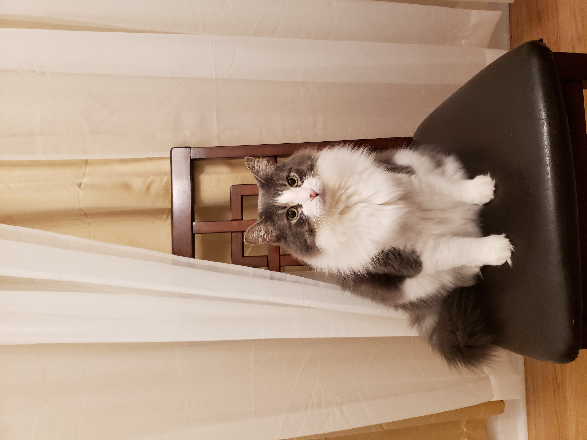
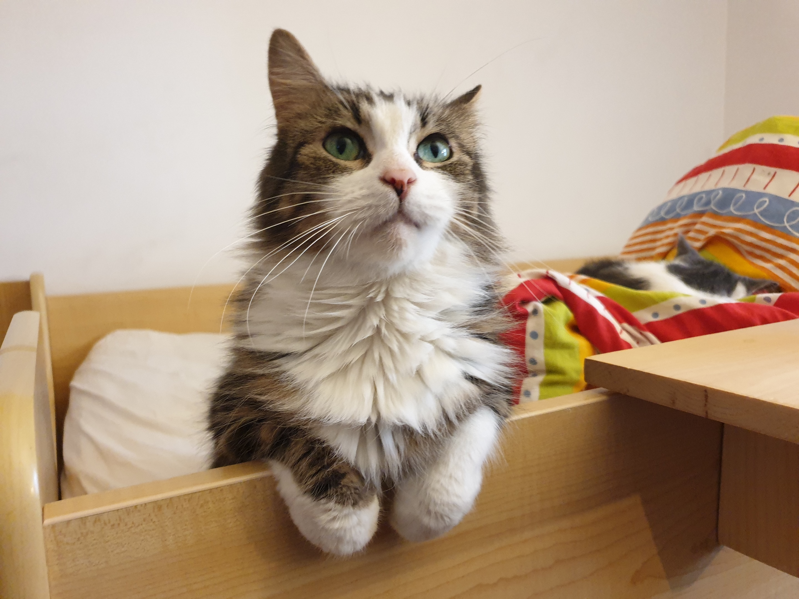
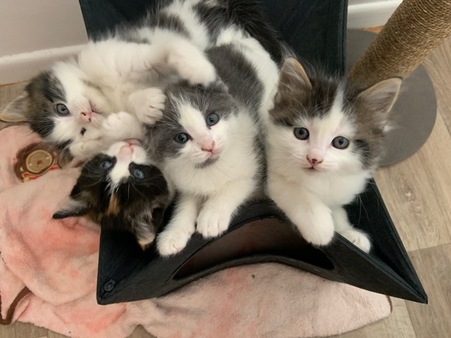
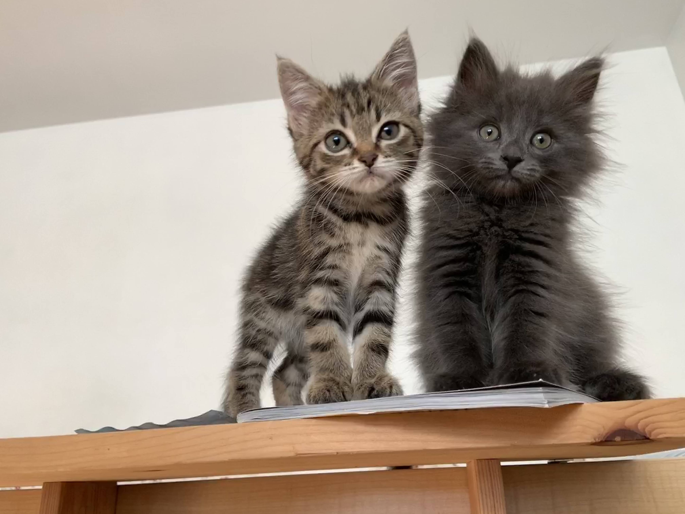

The cats that stayed at our house
Dolma
Dolma was our first cat. We adopted him December of 2016 when he was 3 months old. We had him until he passed away on January 5 2020 due to a urinary tract infection.
Flower
Flower (as well as her kittens) was our first foster cat after Dolma passed away. We had her from January to April 2020 until she got adopted.
Bramble, Buttercup, Blossom, and Bud
Bramble(black and white), Buttercup(grey and white), Blossom(black, orange, and white), and Bud(black and white, less black) were Flower's kittens. We got then when they were around a week old weighing only around 150g each. We had them for around 4 months from January to April 2020 until they got adopted, with Bramble being the lanst to go. Bud and Buttercup got adopted by one of my friends from school.
Lili

After Flower, Bramble, Buttercup, Blossom, and Bud all left, we didn't foster another cat until July 2020. That was when we got Lili, She stayed with us until August 2020 when she went to her adopter.
Starr and Roxy
After Lili we got Starr(grey), and Roxy(tabby) in September of 2020. They aren't siblings with Starr being older (and larger) than Roxy but were paired together to go to their foster (me).
Thistle

Thistle was sent to us in December of 2020 and stayed for a whopping one day before she went back to the shelter for adoption.
Whiskas

Whiskas is the latest cat we've got and is currently living at our house.
Home Page 1 Page 2 Page 3 Page 4